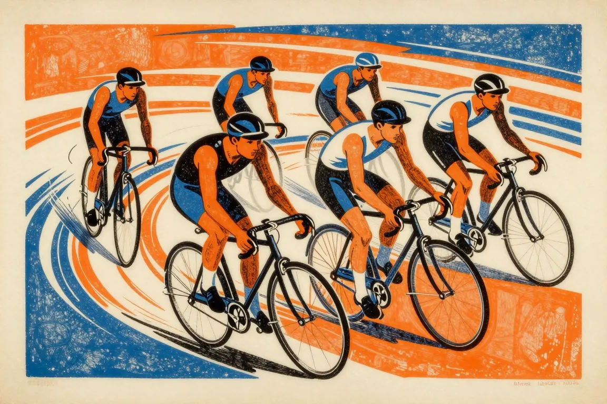

Лист линолеума режут V-образной стамеской и печатают вручную, поэтому рез даёт гладкие кривые без волокна. Плоские кроющие цветные слои перекрываются в смелых ритмичных формах, как в оттисках школы Гровенор 1929–1938 годов.

Главная идея
У линолеума нет волокна, поэтому стамеска режет гладкую кривую, а плоские кроющие цветные слои способны нести ритм и скорость.
Принципы дизайна
Режьте каждый цвет на отдельной линолеумной доске V- и U-образными стамесками; рез даёт гладкую кривую.
Держите каждую форму смелой: линия реза 1–3 мм и белый просвет не меньше 1 мм.
Печатайте цвета кроющими красками, от светлого к тёмному, со смещением 0,5–1,5 мм.
Стройте скорость и ритм изогнутыми формами, которые повторяются по листу.
Печатайте вручную ложкой или на ручном прессе на тонкой японской бумаге.
Нумеруйте тираж меньше 100 и подписывайте его карандашом.